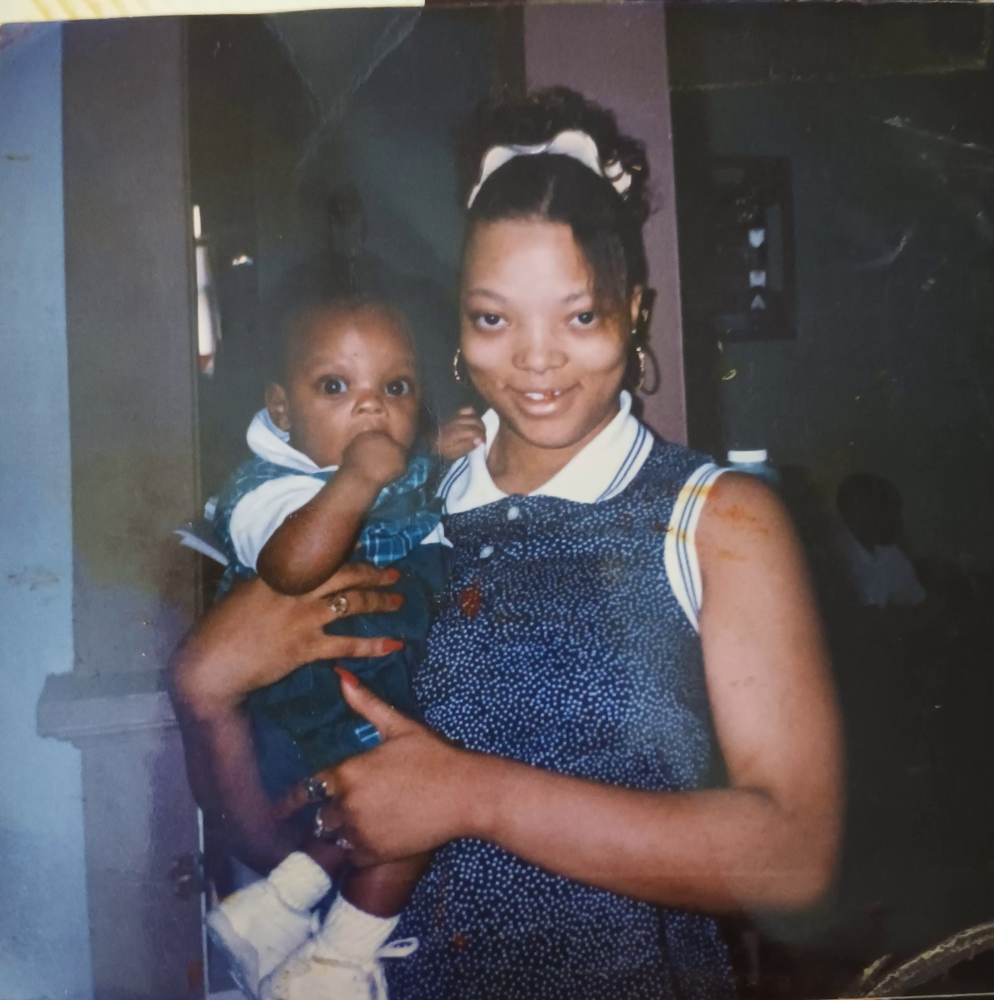
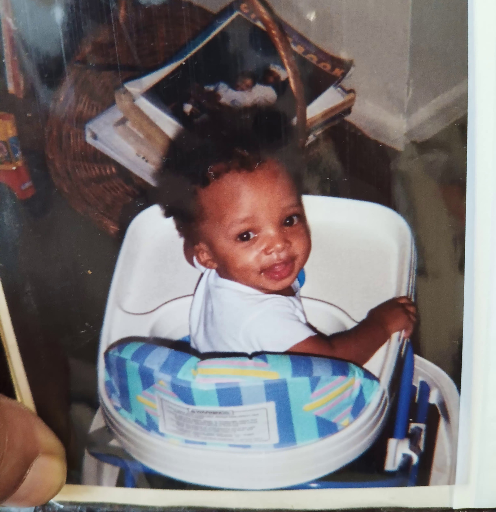
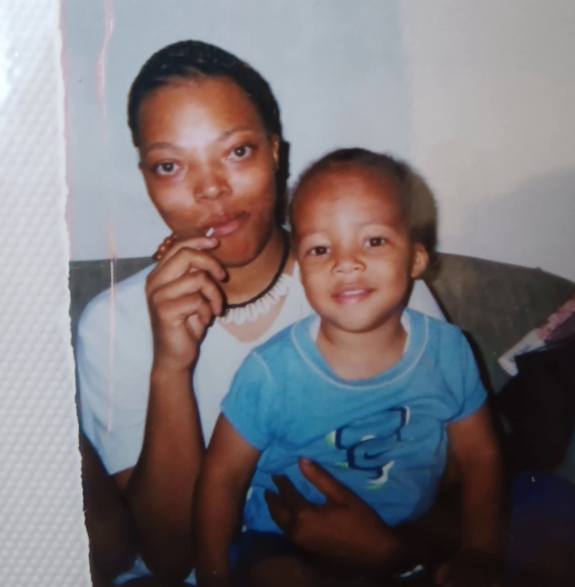

Motherhood
First things first; I am PROUD to have been a teenage mother. From 1995 to 2000, I was focused on building my family. There were NO mistakes involved when it comes to the creation of my children. Each one of them were born from unconditional love through conditional actions. My firstborn son arrived Fall 1995, on the last day of the semester for Thanksgiving break. (I finished my last credit for graduation that same day!) Fueled by my determination to start my family, I had pushed hard to complete high school, graduating at 16 years old pregnant, 2 whole years earlier than scheduled. I had been promoted from 10th grade to graduating high school in 9 months while earning a 4 year scholarship to help pay for college. All for him.
In Summer 1997, I received my 1st apartment. It was a 2 bedroom 2 story apartment in the Sheppard Square Housing Development which was a city housing project that went by my income. I was 18 years old and I was pregnant again. I wanted to have some security for us, so I began savings accounts in the preparation of emergencies and/or school. My second son arrived in Spring 1998, during my 2nd year at JCC studying Human Services (social work) and working for the Housing Authority of Louisville (HAL) Special Programs: StarPoints Nuturing Parenting Program. My job consisted of having my children with me at work while learning how to take care of them so it was the absolute perfect position!
While working for HAL, in 1999, I created the proposal for a childcare center inside the city's Clarksdale Housing Project: Clarksdale Child Development Center for the neighborhood residents. I also assisted in the proposal development for the Mabel Wiggins Family Investment Center, located in the Parkway Place Housing Development (Parkhill) in 1999. I truly enjoyed every moment working for them. It was also Fall 1999 that I found out I was pregnant for the 3rd time. I was still attending college full-time and working 12 hour days so I was damn near due by the time I noticed. It was a very busy time! My last born son arrived Summer 2000, just 4 days ahead of my 21st birthday. BOOM!
There has been no greater achievement in my life than the 3 times I was blessed to give birth. Being their mother IS and will ALWAYS be the best part of my life's existence! And there's nobody but their daddy that I would have wanted to have them with. Their dad, Aaron Sr, was there for them throughout their whole childhood. He did the best he could do for them through his presence and his constant focus on keeping them first.
I really wanted us to get married, eventually, but I realized after multiple indiscretions and violence, that it wouldn't be a good decision. Over the years, we came to understand that the only thing we did right ,TOGETHER, was creating and raising our boys. He was a horrible boyfriend but is the greatest dad.
Being that we were so young, we made the best life we could for our boys. We worked together so that both of us could participate in all of their extra-curriculum activities and events. We developed an understanding that no matter what we chose to do with our personal lives, nothing and no one, would divert our commitment to being unified when it comes to our family.